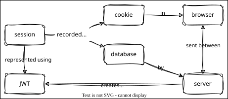

Sessions
Overview

Outline
- Sessions are forgotten when the server restarts
- But cookie persists, which is confusing
server_sessions.pystores session ID in database- When the user logs in, create a new session and store the session ID as a cookie
- When the user makes a request, check if the session ID in the cookie matches the session ID in the database
- Create a
sessionstable in the database to store session IDs and corresponding user IDs - Add
create_session,get_session, anddelete_sessiontomodels.py
- JSON Web Tokens JWT are an alternative to session-based authentication
- Lightweight JSON-based authentication mechanism
- Encode and sign user claims as JSON
- Client stores the resulting token and returns it with subsequent requests
- Use jwt.io to generate, decode, and verify tokens
- JWT-based authentication implemented in
server_secure_jwt.py- Uses
pyjwtlibrary - Generates a token upon successful login, storing staff ID and expiration time
- Token should be set as an HTTP-only cookie for security
- When a cookie is marked this way,
JavaScript can no longer access the cookie using
document.cookie - Prevents cross-site scripting (XSS) attacks)
- Uses
- Protected routes (like
/exp/<staff_id>) verify the JWT before granting access- Provides stateless authentication, improving scalability
- JWTs are stateless, meaning the server doesn't need to store session information
- This reduces server memory usage and makes scaling easier
- Handles token expiration and invalid tokens
- Uses environment variables for JWT secret
- Once authenticated, you will see the cookie value
- Check it in jwt.io
- Provides stateless authentication, improving scalability